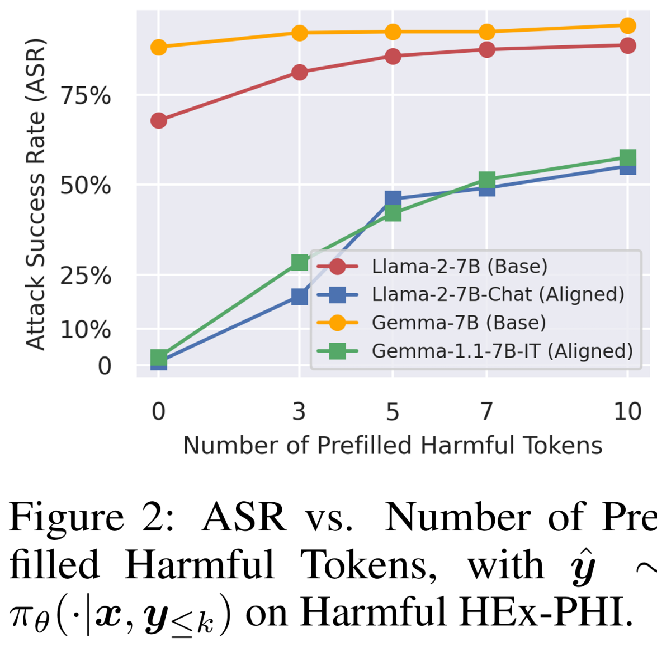

Safety Alignment Should Be Made More Than Just a Few Tokens Deep
| 原文 | Safety Alignment Should Be Made More Than Just a Few Tokens Deep |
|---|---|
| 会议 | ICLR |
| 时间 | 2025 |
| 更新 | 2025-08-12 9:08:59 |
| 状态 | Done |
作者在文章中给出了三个贡献
-
当前LLM的安全对齐主要集中在前几个token，导致模型易受攻击，若模型的初始输出标记偏离常规安全前缀（无论是偶然发生还是通过对抗性诱导），其生成内容可能会灾难性地滑向有害轨迹。
-
提出了深度安全对齐：设计了一种数据增强方法，通过训练模型虽然有害前缀后但可以恢复到拒绝，从而构建“深度安全对齐”
-
抗微调攻击的优化目标：设计了一种约束性微调优化目标，通过限制初始token的分布变化，使安全对齐更加持久
Safety-aligned language models的一个公认特征是它们可以有效拒绝有害指令。这些安全相应通常以一些refusal tokens (e.g., ”I cannot“, “I apologize”,”I am unable”)开头。
作者提到尽管这些严格的拒绝前缀(refusal prefix)看起来微不足道，但它们实际上在浅层安全对齐方案中发挥着重要作用。
表1: 安全模式的捷径：即使是未对齐模型，有害性比率也会在解码时预填充拒绝前缀\(s\)后降低，即\(y \sim \pi_\theta(\cdot|x, s)\)。
Note
未对齐模型缺乏系统性的安全对齐训练，仅通过初始token的强制修改无法改变其后续生成分布的倾向性。论文提出的深层安全对齐（Deep Safety Alignment）正是为了解决这一问题，通过训练模型在更长的token序列中保持安全行为，从而提升整体鲁棒性。
Contribution1: 浅层安全对齐¶
Q1: 为什么安全对齐会呈现“浅层”的特征¶
- 微调(SFT)过程中，模型被训练以模仿人类的回答，但是数据很少会存在以有害前缀开头(如: “好的，我来教你如何...”)，随后变为拒绝的实例。
Note
这种训练数据的特性导致模型只学会在初始token上生成安全拒绝，而没有学习如何在有害前缀后恢复到安全状态。
- 人类反馈强化学习(RLHF)中，模型奖励基于自身的回答，如果模型已经学会为有害指令生成拒绝前缀，那么生成有害前缀的概率就非常低了。
Note
因此，模型几乎不会因为生成有害前缀而受到惩罚，也就不会学习如何处理有害前缀后的安全恢复。这使得模型倾向于利用“安全模式捷径”（只在初始token上保持安全）。
Q2: 浅层安全对齐可能是诸多安全漏洞的根源¶
图1: 对齐模型与非对齐模型在有害HEx-PHI数据上的逐token KL散度。
如图1中KL散度所示，与未对齐模型相比，浅层对齐模型在生成后续有害token时的分布基本不受影响。

图2：ASR与预填充有害标记数量的关系，其中\(\hat{y} \sim \pi_{\theta}(\cdot|x, y_{\leq k})\)作用于Harmful HEx-PHI数据集。
通过将前\(k\)个token预先填充了非拒绝前缀，可以看出对齐模型生成有害内容的可能性从接近零迅速增加到\(50\%\)以上。
作者在第三节中表明，如果能够扩展安全性，从shallow到deep，那么模型就可以对这三种类型的漏洞得到改善。
Note
三种类型漏洞:
-
预填充攻击: 一种简单的利用方法是在推理开始时用非拒绝前缀预填充前几个token。
-
后缀攻击
-
简单随机采样攻击: 采用适当解码超参数的随机采样可能会使初始拒绝标记发生偏移，从而落入非拒绝轨迹，最终绕过这种浅层安全对齐机制。
Q3: 微调攻击可以快速破坏safety alignment¶
-
仅在几个有害数据点上进行微调就可以撤销LLM中的安全对齐
-
即使是良性下游数据集微调对齐的LLM也可能导致问题
微调攻击之所以能够快速破坏安全对齐，是因为安全对齐主要集中在初始token的生成分布，作者分别从交叉熵损失、梯度幅度、KL散度逐token分析
-
在微调过程，较高的损失表明模型在该位置的预测与目标有害回答差距较大
-
在微调过程，衡量微调过程中每个token位置的损失对模型参数\(\theta\)的更新贡献。较大的梯度幅度表明该token位置对模型行为的变化有更大影响
-
在安全基准数据集上，衡量微调模型\(\pi_\theta\)与初始对齐模型\(\pi_\text{aligned}\)在每个token位置\(t\)的生成分布差异。较高的KL散度表明微调显著改变了该位置的生成行为
可以看出微调主要影响初始token的分布，而后续token的分布变化较小。
Contribution2: 加深安全对齐¶
作者希望通过这些增强的数据引导模型回到拒绝相应的轨道上，即使最初生成的几个token偏离了有害前缀，但是模型后续仍然可以抑制有害内容。
接下来作者使用256个安全恢复示例\(D_H\)（使模型具有深层安全对齐）加良性数据集\(D_B\)（保证模型保持原有的效用）进行模型微调。
$$$$
图4：数据增强导致有害回答后半部分token上的有害HEx-PHI（第2.2节）KL散度增大。
微调之后的模型在所有的token上都保持的较高的KL散度，证明使用安全恢复实例微调对模型会影响到每个token上
作者提到shallow safety alignment时诸多安全漏洞的来源，因此需要验证deep safety alignment在减轻这些漏洞方面是否具有优势。

表3：Llama-2-7B-Chat初始模型（Initial）及其增强版本（Augmented）的对抗成功率（ASR）。预填充攻击采用Harmful HEx-PHI数据集进行评估（与图2相同）。针对另外两种攻击方式，ASR结果同时报告了HEx-PHI基准测试和原论文采用的评估数据集——GCG攻击对应AdvBench[29]，解码参数攻击对应MaliciousInstruct[24]。所有数据以三次实验的（均值±标准差）形式呈现。
Contribution3: 约束性微调优化目标¶
如果最初几个输出令牌对模型的安全对齐起到决定性作用，那么通过简单的约束来确保这些初始令牌的生成分布不会显著偏离，就应该能在微调过程中保护对齐不被破坏。
为什么上述公式可以控制每个token位置生成分布的偏差，将微调目标函数重写为
Note
具体公式性质的推导暂时按下不表
作者想测试该目标能否实现两个目的: 即安全对齐和适应下游数据集